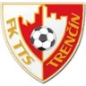

Posledný zápasU11 Prípravka
 FK Horná Súčahostia
FK Horná SúčahostiaVýsledky prípraviek sa nezapisujú
Návrh webu · nie je to oficiálna stránka klubu
III. liga prípraviek U11 ObFZ Trenčín
Posledný zápasU11 Prípravka
FK Horná SúčahostiaVýsledky prípraviek sa nezapisujú
Prípravky hrajú bez výsledkov a bez tabuľky. Rozpis zápasov je nižšie.

TTS Trenčín B doma, 29. kolo 17:30Hráči, ktorí v kalendárnom roku 2026 nastúpili alebo boli v nominácii na zápas (podľa Sportnetu). Pri mládeži uvádzame len mená.